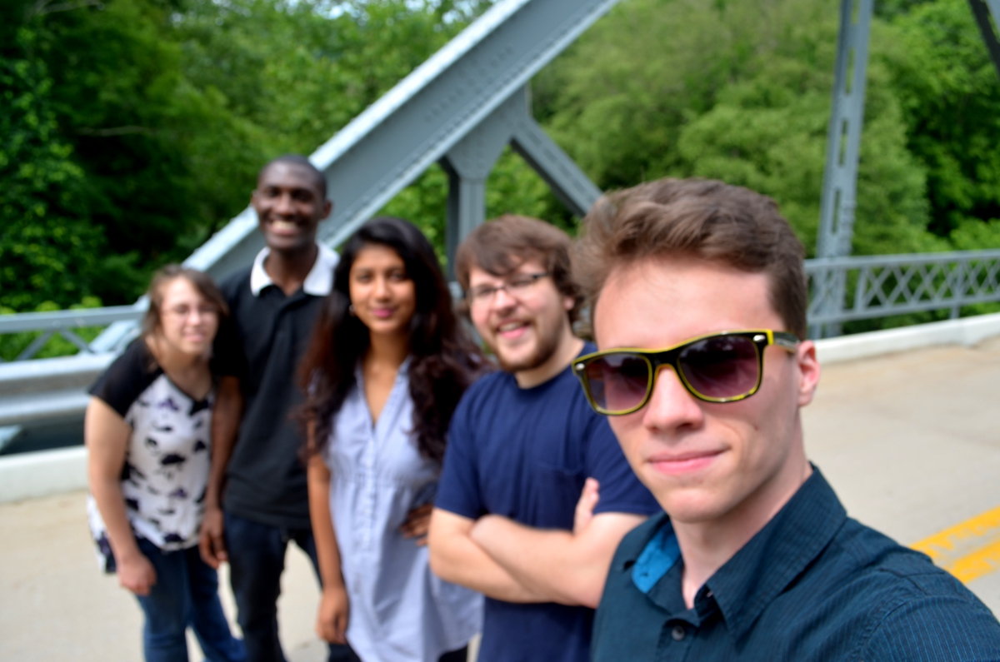
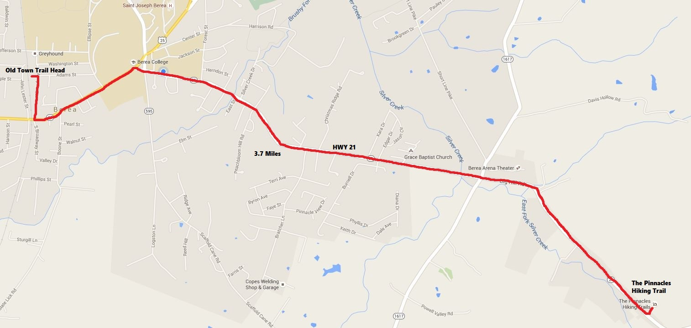
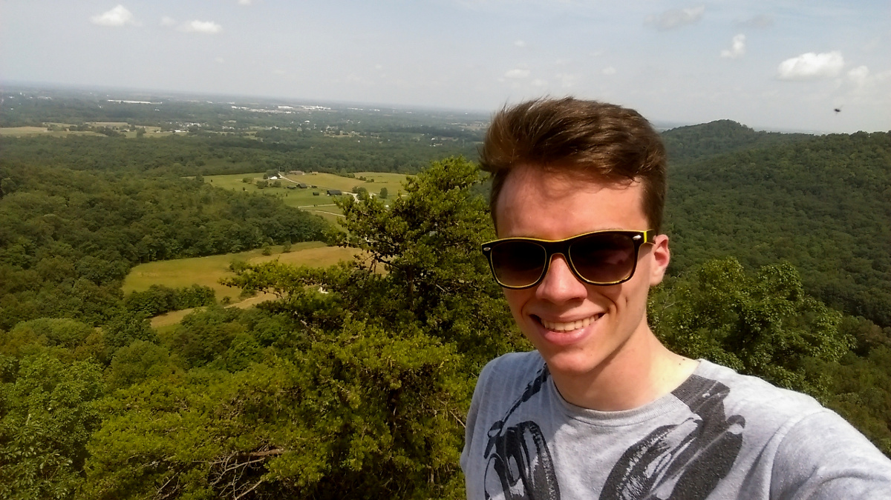
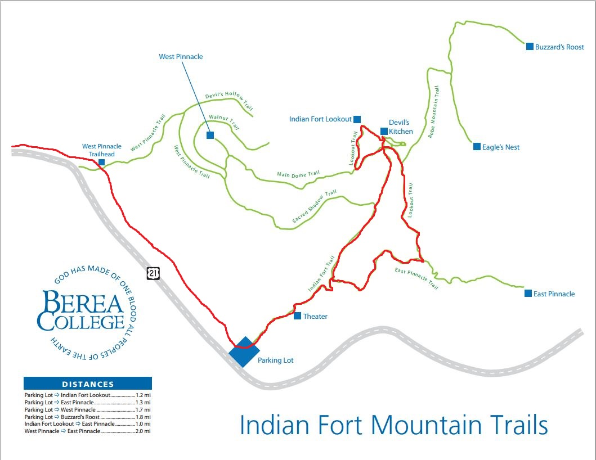
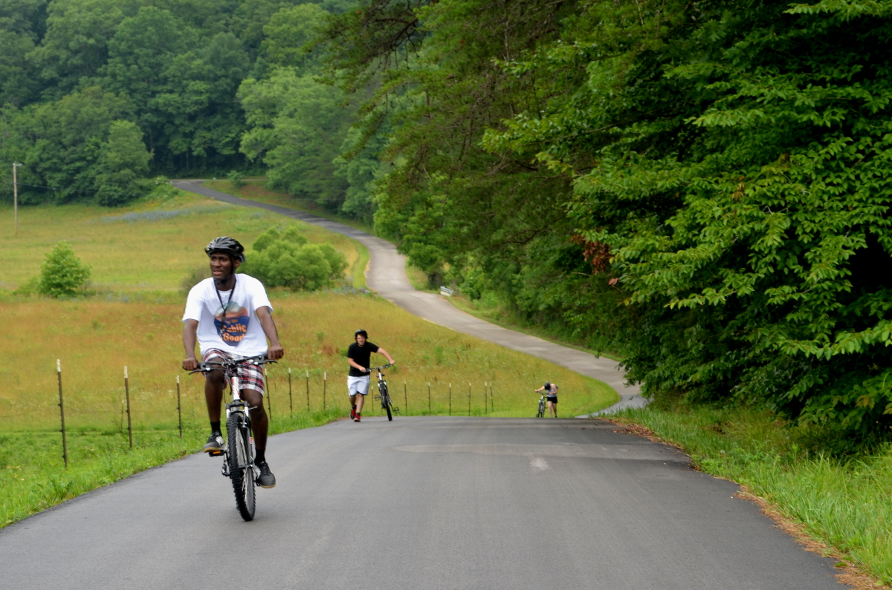
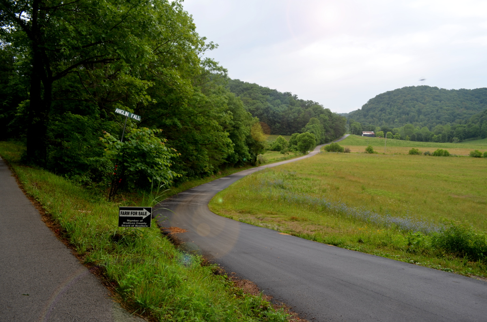
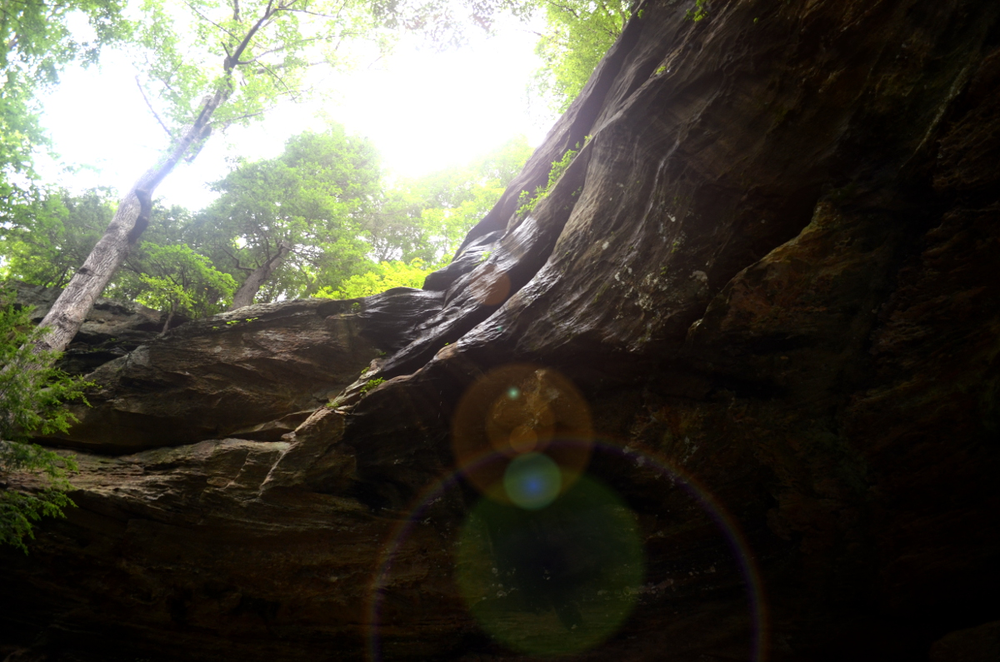

Day 1
Monday morning we studied a sustainable non-profit called “PeePoo”. PeePoo sells biodegradable waste bags in countries where toiletries are unavailable or expensive. PeePoo bags keep human waste out of the streets and their bags are lined with beneficial bacteria that degrade the contents of the bags into safe to use fertilizer. PeePoo then buys back the filled bags to sell to local farmers.
After researching the company for a bit, we completed a business model canvas for the non-profit. Each team created a model with a specific restraint or challenge in mind. For example, my team created the model and were tasked to include an attribute in the model that would rise the switching cost (cost to the user for using another product over another) of PeePoo’s service.
In the afternoon, our guest, John Fox, spoke to us about the Daniel Boone Trace Trail. Dr. Fox, a retired surgeon and leading member of the Friends of Boone Trace Organization, is very knowledgeable about the history and significance of the Boone Trace Trail. He walked us through the trail via an online map from its origin in the Town of Middlesboro all the way to Fort Boonesboro, KY. Dr. Fox’s presentation was to prepare us for the next few days as we will be traveling portions of the trail and reporting on major attractions and giving feedback to Dr. Fox next week. My team was assigned to travel the portion of the trail in Rockcastle County. We would set out on Wednesday.
Day 2
We spent the entirety of the day in the classroom mostly discussing graduate school. As part of the “Business Model You” portion of EPG, we are considering career choices and planning for our futures. To bring awareness to the actual costs of graduate school, Hackbert required each of us to do the math. After factoring the costs of education, projected salaries before and after grad school, income tax brackets, and student loan interest, I estimated that I would make approximately $1,400,000 more in my lifetime should I attend grad school. The exercise seemed to backfire as most of us would make significantly more should we attend grad school; but for a few individuals, the cost of higher ed was not worth the payoff.
Day 3
For Wednesday, Thursday, and Friday we would not be meeting for traditional class time. However, each team was required to do three activities before the weekend. We were to travel and map our assigned portion of the Boone Trace Trail, bike/hike to the Berea College Pinnacle Trails and hike any portion of the many trails there, bike to Anglin Falls and hike to the falls.
My team decided to do one activity each day and set out in the van on Wednesday to trace the Boone Trace. The Boone Trace Trail is a motor trail that loosely follows the path Daniel Boone traveled as he entered the “New Frontier” through the Cumberland Gap. Along the trail are several historical markers placed in the early 1900’s by The Daughters of the American Revolution. These markers along with other significant points of interest were to be documented and assessed by each team within the county that they were assigned.
 On the bridge marking the end of Rockcastle CountyRockcastle County happened to have the least number of points of interest and zero historical markers. It was also the county neighboring Madison (the county harboring Berea), so naturally our team finished early with little excitement and decided to drive north to RIchmond for some fine Indian cuisine for lunch.
Day 4
Today, my team planned on biking to The Pinnacles but we were unable to establish contact with our bike rental guy in Berea in time to reserve bikes so we ended up walking 3.4 miles to the destination. The Pinnacles are part of The Berea College Forest and consist of a loop of interconnected trails that climb to and lace the top of a prominent mountain.
 Route we walked to get to The PinnaclesOnce at the base of The Pinnacles, my team began the steep climb to the lookout known as “Indian Fort”. We spent some time up there taking pictures and enjoying the amazing view. We were exhausted and hot from the walk to and up the mountain so we unanimously agreed to not hike the rest of the trails but to return back to the college. On the way back we were offered a ride from another team who decided not to endure the heat and took their van to The Pinnacles.
 Selfie at the top of Indian Fort  Route we hiked at The PinnaclesIt was about this time that everyone received an impromptu invitation to a “focus group dinner” that night at 6PM. The email made it sound like an optional gathering but not many were going to take chances and were drawn by the promise of free food, including myself.
We had little idea what the meeting was about until we arrived. A senior from a university in Arkansas was doing research for his capstone project which involved interviewing students involved in civic engagement about the idea of a Certification of Civic Engagement. We answered questions and gave feedback to this student and afterwards enjoyed Chinese takeout from the local Chinese buffet.
Day 5
We retrieved our bikes at 9AM and began the bike to Anglin Falls (10.2 miles). The path to the falls was on the highway the whole way so we had to be wary of cars around the steep and curving mountainsides that we scaled. The drivers were courteous and passed with plenty of space between us. The ride was mostly hills save for an entire mountain that had to be scaled by foot (coming down was fun though).  Biking to Anglin Falls
We heard from a team that biked to the falls yesterday that they were approached by a pack of dogs so we were very cautious of dogs along the way. We were approached by several dogs throughout the journey but none posed a real threat.
 Road leading directly to the trailOnce at the falls we were already exhausted from the ride but had another steep climb ahead of us. To make things worse, only one team member had the foresight to bring a water bottle. We were banking on the falls to be our source of hydration. The hike to the falls was relatively short but steep and slippery from yesterday’s rain. We came upon a sharp cliff face and had to squint to see the water droplets in free fall from the top. The “falls” were more of a drip ,even after a light rain. Unperturbed, we began gathering large leaves to craft a funnel to collect enough water from the falls to quench our thirst and fill our one water bottle. After cooling off and hydrating at the falls we descended the mountain and mounted our bikes for the 10.2 mile journey back to the college.
 The Falls. (If you look real hard you can see the water)I noticed the extreme fatigue of everyone in my team and sensed their pain so I rushed ahead to the college and grabbed the van that we still had check out from the college motor pool. I drove it back to pick up two of my teammates and their bikes. Saving them a few miles of agony.
Later that night the teams concerned in the classroom to begin working on our presentations showcasing our experience with the Boone Trace Trail, The Pinnacles, and Anglin Falls. We departed for the weekend with the task of completing these presentations by Monday in preparation of presenting them to Dr. Fox and the Berea Tourism Commission next week.